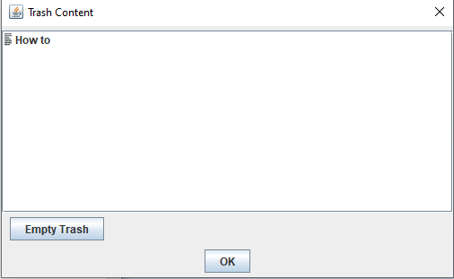
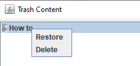
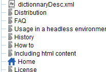
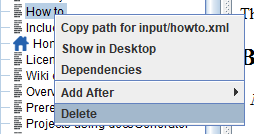
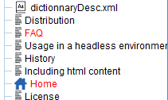

Home
Categories
Dictionary
Download
Project Details
Changes Log
What Links Here
How To
Syntax
FAQ
License
Editor trash
The trash allows to restore deleted files exactly as in any graphical user interface system.
You can access the trash by the trash button in the editor toolbar:
in the editor toolbar:

From the list, you can restore the element or delete it permanently:
A button allows to empty the teash completely.
We delete the "How to" article:
After the deletion, the "How to" article is removed from the tree[1]
Now we go to the trash and restore the "How to" article:
After the restore, the article is restored and the references are valid again:
You can access the trash by the trash button
in the editor toolbar:
Trash window
The trash window presents the list of the elements which have been deleted:
From the list, you can restore the element or delete it permanently:

A button allows to empty the teash completely.
Restoring elements in the trash
Restoring an element in the trash will put it at its position in the tree before it was removed. The dependencies of this element, and also of the elements which were connected to this one before the deletion, will be updated.Usage example
Take this wiki as an example:
We delete the "How to" article:

After the deletion, the "How to" article is removed from the tree[1]
It is also deleted in the file system
, and the articles which have references on "How to" are now seen as invalid:
Now we go to the trash and restore the "How to" article:
After the restore, the article is restored and the references are valid again:
Notes
- ^ It is also deleted in the file system
See also
- DocGenerator editor: This article explains the DocGenerator editor
- Editor window: This article explains the content of the Editor window
×

Categories: Editor | Gui